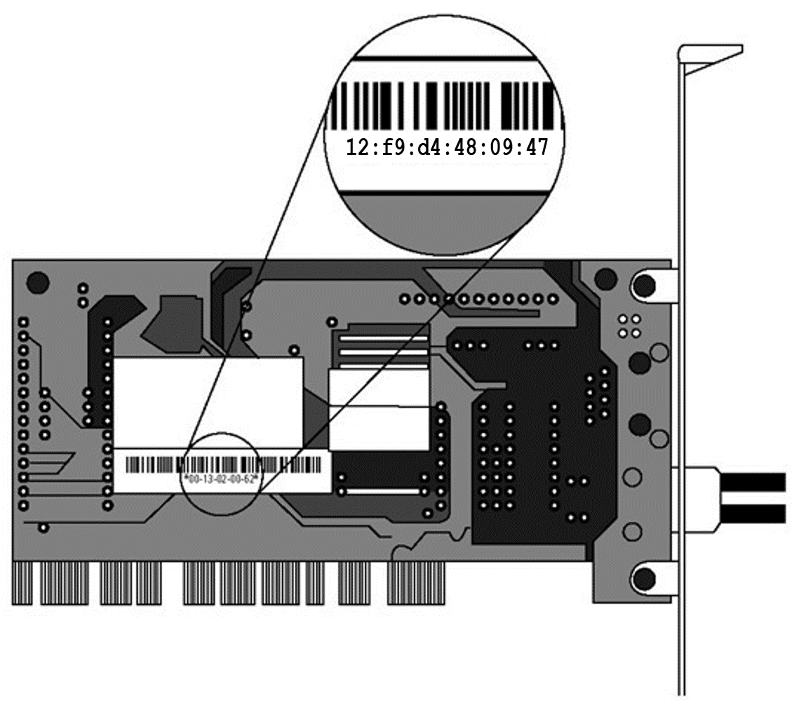

Lina's Blogs
Welcome to my webpage. Here, I will share weekly blogs for my CIT 480 class.
Blog 1: Changing MAC Addresses
Today’s blog is going to be about Mac Addresses and how to change them via a short python script.

The MAC address is assigned by the manufacturer of a Network Interface Controller (NIC), and it is stored in the hardware. The NIC is a computer circuit card that allows a computer to connect to a network. To remain anonymous on the internet you should, first of all, change your mac address. Although it may not be the most important thing to do but surely it is one of the steps which you need to do to climb the ladder of anonymity.
Follow the steps below to change your MAC:
STEP 1: Checking the actual MAC
ifconfig
.png)
STEP 2: Basic Python script to change MAC
nano mac_changer.py
#!/usr/bin/env python
import subprocess
subprocess.call("ifconfig enp0s3 down", shell=True)
subprocess.call("ifconfig enp0s3 hw ether 00:11:22:01:23:45", shell=True)
subprocess.call("ifconfig enp0s3 up", shell=True)
To learn more about this script click here.
STEP 3: Run mac_changer.py
python3 mac_changer.py
STEP 4: Confirm that your MAC has been changes
ifconfig enp0s3
.png)
And that is ONE way how you can change your MAC address.